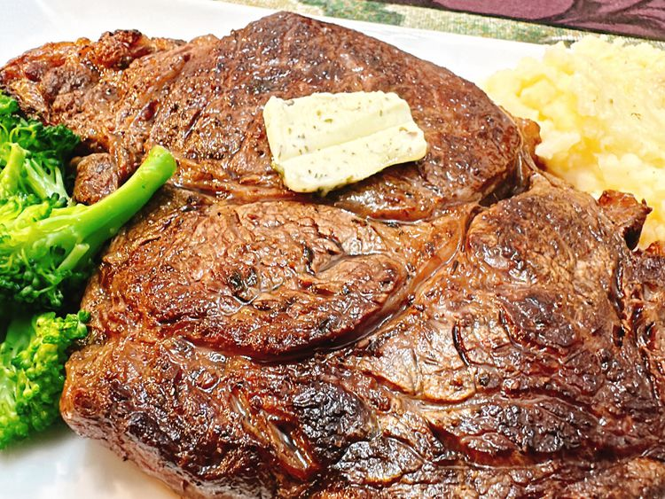

Butter Rib-eye Steak

Description:
This butter-basted ribeye steak is an indulgent dish that is date night-worthy, perfect for company, and very easy to prepare. Use a high-quality herb butter for the best flavor.
Ingredients:
- 1 (1 pound) rib eye steak
- salt and freshly ground pepper to taste
- 2 Tablespoons garlic and herb salted butter (such as Kerrygold®), plus more for serving (optional)
Steps:
- Remove steak from package, pat dry, and place on a plate. Refrigerate, uncovered, for 2 hours before cooking.
- Heat a heavy skillet over medium-high heat until hot. Sprinkle steak thoroughly with salt and pepper. Trim off any extra fat from steak. Place steak in skillet with fattest side down; cook until fat is browned, about 2 minutes. Continue cooking until steak is browned, about 2 minutes.
- Add butter to skillet and cook until butter is browned. Turn steak over and cook, basting with browned butter, for 2 minutes more. Remove from skillet to a plate. Tent with foil, and rest steak for 7 minutes to absorb juice. Serve steak with a pat of butter.